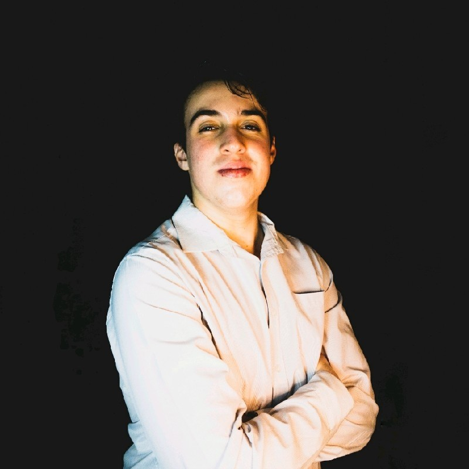

|

Sobre Alan Andrade Vasconi de SouzaPrezados, Gostaria de me apresentar formalmente a vocês. Meu nome é Alan Andrade Vasconi de Souza e sou um estudante entusiasmado do curso de Bacharelado em Engenharia de Software no IFSP - São Carlos. Atualmente, estou no meu primeiro semestre na faculdade e estou ansioso para expandir meus conhecimentos e habilidades nessa área em constante evolução. Sou uma pessoa pró-ativa e sempre estou em busca de aprender coisas novas. Tenho experiência em diversas tecnologias, incluindo HTML, CSS, BOOTSTRAP, Python e possuo fluência no idioma inglês. Essas habilidades me permitem ter uma base sólida para desenvolver projetos e soluções criativas. Além disso, possuo conhecimentos específicos na área de Arquitetura e Organização de Computadores e Processos de Produção de Software, os quais compartilho através deste site. Nele, vocês encontram informações relevantes e conteúdos relacionados a esses temas, fruto do meu interesse e estudo dedicado. Desde o ensino fundamental II, meu interesse pela área tecnológica despertou, tendo participado de competições de Lego Mindstorms EV3 até o 9° ano. Durante o ensino médio, participei ativamente como programador em competições envolvendo a plataforma Arduino. Essas experiências moldaram meu caminho e fortaleceram ainda mais minha paixão por Engenharia de Software. Para entrar em contato comigo ou saber mais sobre minha trajetória, fiquem à vontade para me adicionar no WhatsApp, no número (19) 99445-0160, ou me encontrar no LinkedIn, através do perfil Alan Vasconi. Além disso, estou disponível por e-mail, no endereço alansouzeesi@gmail.com. Agradeço pela atenção e pela oportunidade de me apresentar. Estou ansioso para futuras colaborações e para continuar crescendo profissionalmente na área de Engenharia de Software. Atenciosamente, Alan Andrade Vasconi de Souza |